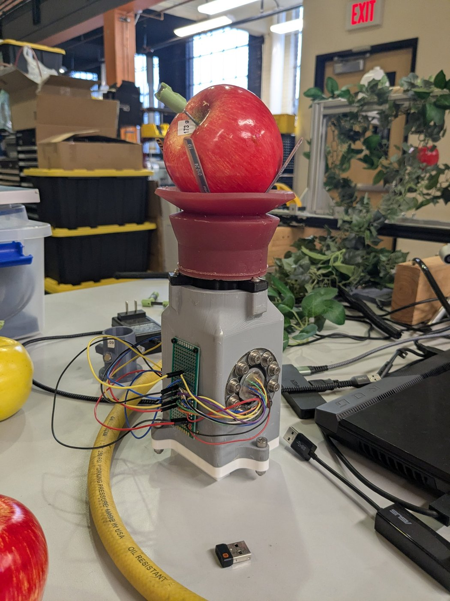
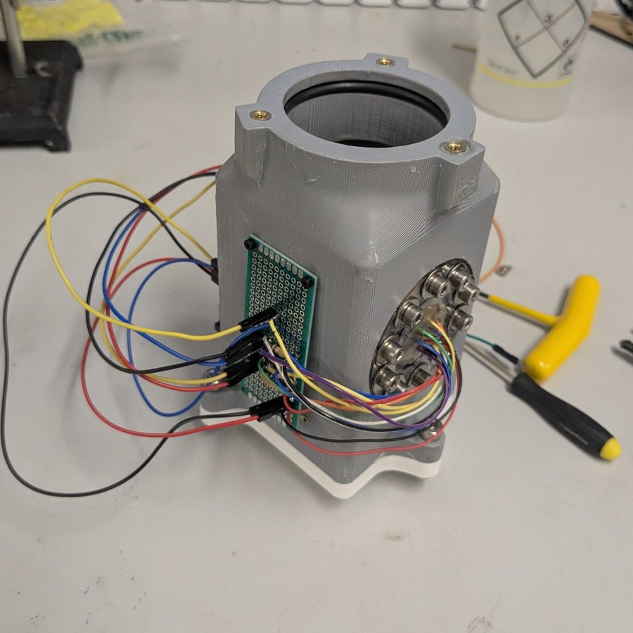
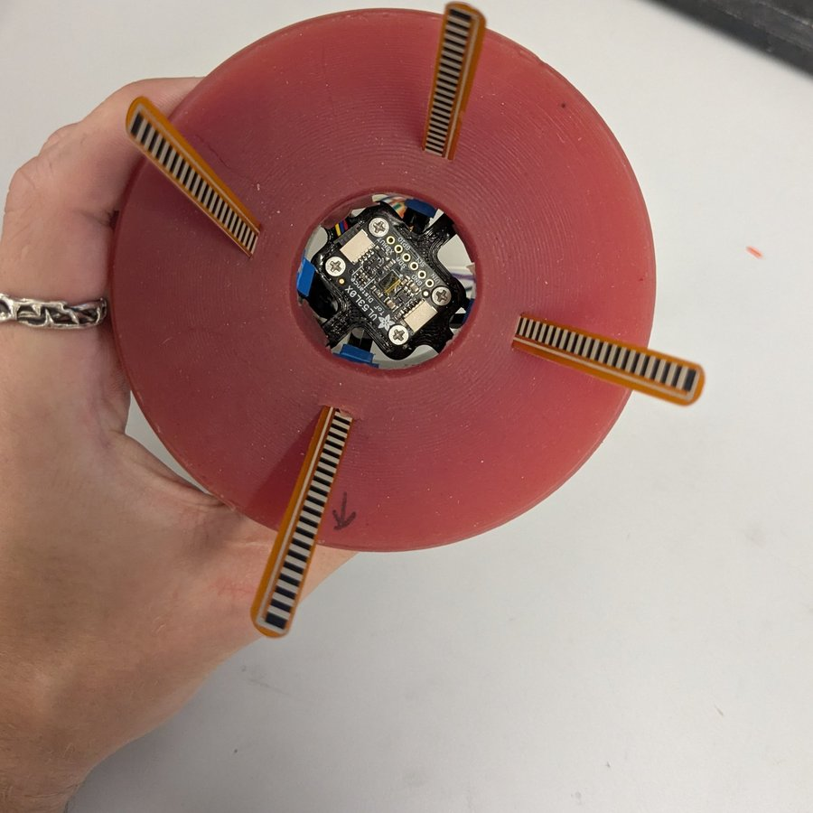

Robotic Apple Picker End-Effector
A sealed suction-cup end-effector that packages vacuum, sensing, and electronics for a six-axis robot arm picking apples autonomously.

Problem / Goal
The lab was evaluating grippers that could reliably detect and pick apples autonomously with a six-axis robot arm. My task was to design the end-effector for a suction-cup gripper being tested. It had to house the suction cup, flex sensors embedded in the cup, a time-of-flight distance sensor, an Arduino, and the air hose connection, and mount to the arm through the lab's existing flange adapter.
Two constraints drove the design. The end-effector couldn't be much bigger than the suction cup itself, and the whole assembly had to hold a low, steady vacuum so it could grab, pull, and hold apples through continuous picking.
My Role
I owned the end-effector from concept to working prototype: CAD, sealing design, fabrication, and assembly. Additionally, I helped write the Arduino code. I worked largely independently, with occasional check-ins with my PI.
Design Process
- Sealing. The vacuum requirement made sealing the core problem. This was my first time designing with O-rings, so I spent about two weeks researching O-ring types, sizes, and fits before committing to groove dimensions. Holding the groove tolerances on 3D-printed parts was the main challenge across iterations.
- Electrical feedthrough. Flex sensor wires had to exit through the sealed base. Commercial feedthroughs were too expensive for a prototype, so I made my own using an acrylic plate with wire holes in the center and screw holes around the perimeter. The wires were sealed with epoxy, given strain relief with hot glue, and the plate sealed to the base with an axial O-ring.
- Packaging. The base includes a time-of-flight sensor that sits inside the housing and looks out through the suction cup's opening to detect apple distance, an Arduino sitting outside the housing, and a sealed, third-party air hose nozzle.
- Fabrication. I 3D printed the housing and coated the inside and outside surfaces with epoxy to make it airtight, then assembled it with off-the-shelf pipe fittings, O-rings, and a hose clamp.
Results
The prototype held a vacuum and successfully picked apples during testing. However, it wasn't fully finished: the intake hose still needed a permanent welded mount, but the system held vacuum and picked apples regardless. The planned next step was remaking the housing in an inherently airtight material instead of an epoxy-coated print.
Tools Used
Fusion 360, 3D printing, laser cutting, epoxy sealing, O-ring gland design, Arduino.
Lessons Learned
I spent a lot of time perfecting details before building, which left room for only a few iterations. If I did it again, I'd definitely get an inexpensive prototype built sooner, since a physical part exposes design flaws much faster than CAD does (especially when it takes a whole day to print).

